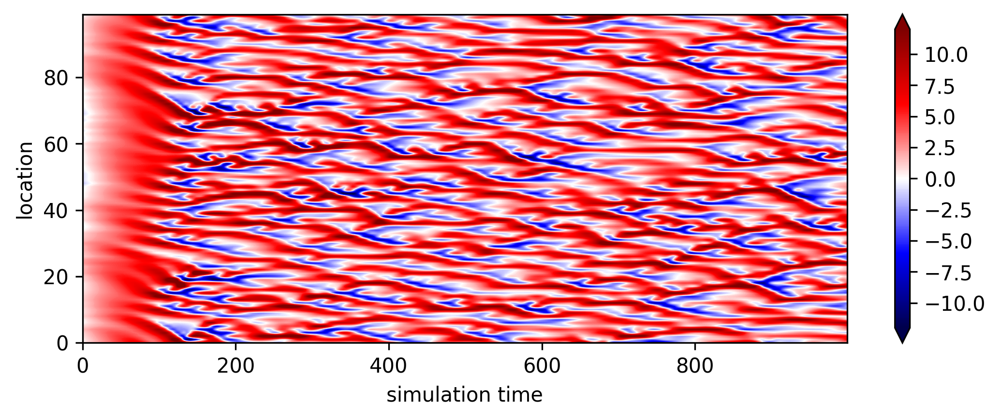
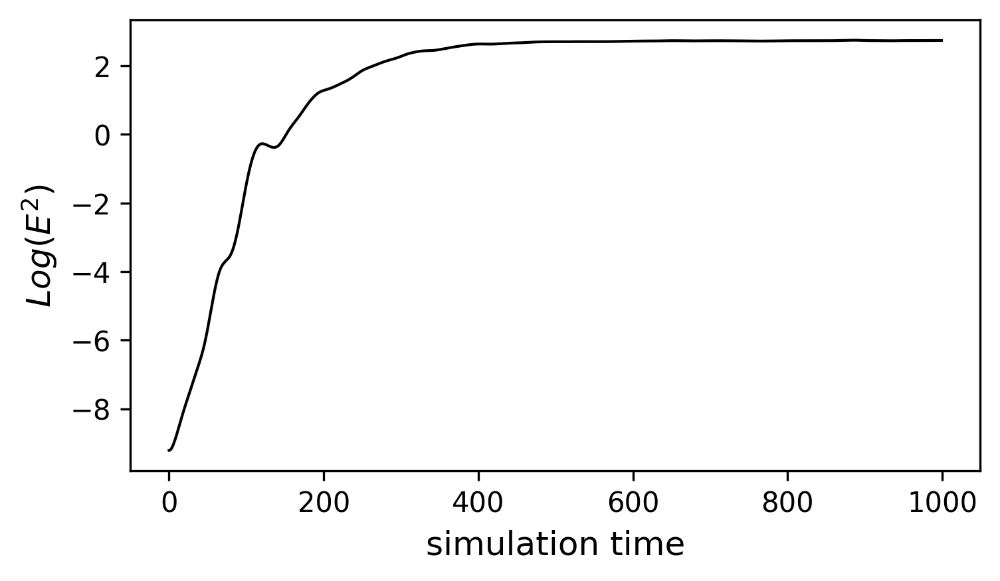
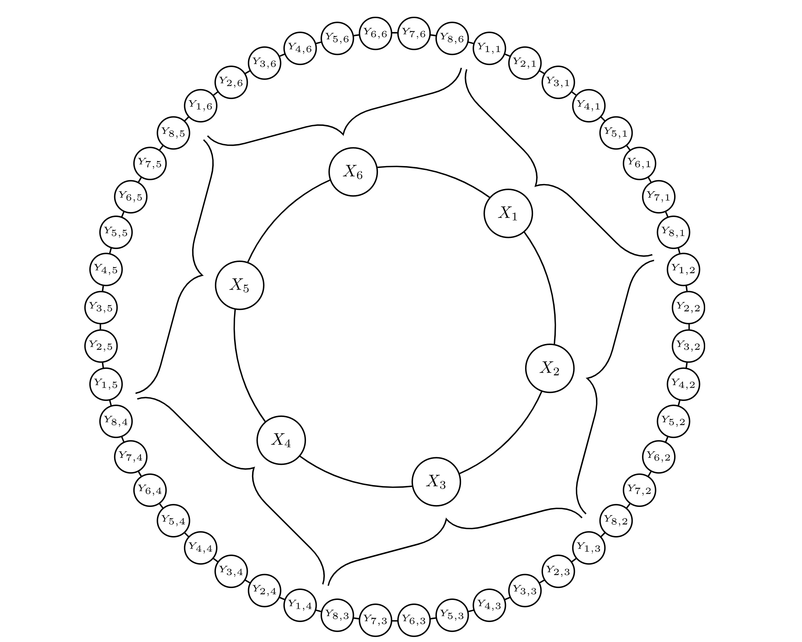
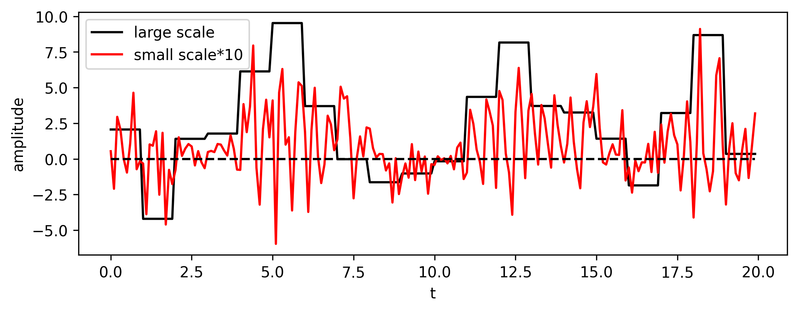
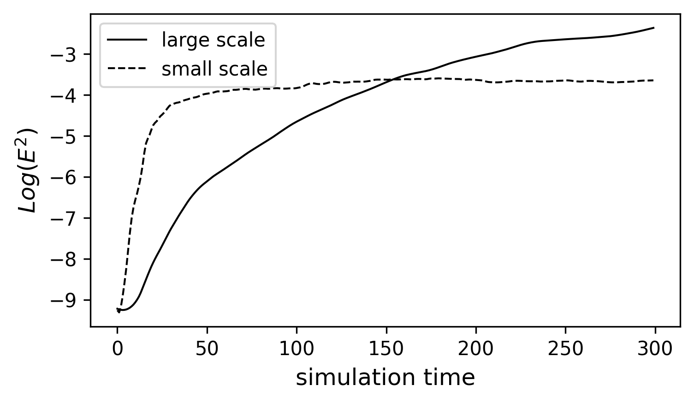

Week 4: The minimalist models for studying chaos and predictability II: Lorenz 96#
Following previous week, this week we will walk through the Lorenz 96 model, which is another widely used toy model in data assimilation and chaos studies. It is one of the first few models mimicking the nonlinear wave propagation in a narrow latitudinal band. A fun fact about Lorenz 96 model is that it was never published in a peer-reviewed scientific journal. Instead, this model was only presented by Ed. Lorenz at a conference in 1995 and was documented by Tim Palmer in a textbook later on in 2004. The story behind the model can be found in week 3.
The physical and mathematical background#
The formula of Lorenz 96 model (38) is a set of prognostic equations which predicts the evolution of \(X_i\). \(X_i\) represents the variable of interest at the longitude of \(i\).
One can easily find that two nonlinear terms, \(-X_{i-1}X_{i-2}\) and \(X_{i-1}X_{i+1}\) lead to the chaotic features in Lorenz 96 model while the last two terms on the right hand side are linear damping and constant forcing respectively. The first two terms represent the nonlinear advection of \(X_i\) from one grid to another. The reason becomes clearer once the two terms are grouped together,
which has the structure of \(-u\frac{\partial u}{\partial x}\): an amplitude multiplying a spatial difference of its neighbours, i.e., a field advected by a “velocity” that is the field itself. Compare it with a centred finite difference of the advection term in Burgers’ equation, \(-X_{i}\frac{X_{i+1}-X_{i-1}}{2\Delta x}\). Lorenz simply shifted the advecting factor from \(i\) to \(i-1\) and widened the stencil so that the difference is taken between \(i+1\) and \(i-2\). That shift is not cosmetic: it is exactly what makes the discrete operator conserve energy. We can prove that the total energy is conserved when forcing \(F\) and damping \(-X_{i}\) are absent and domain is periodic (i.e., \(X_{i-K}=X_{i+K}\)). (HW)
It is worth stressing that (38) is not a discretisation of any particular partial differential equation. The index offsets were chosen so that the quadratic term conserves \(\sum_i X_i^2\) and so that the resulting waves propagate, not by deriving them from \(u\partial_x u\); the asymmetric stencil in fact has no \(\Delta x \rightarrow 0\) continuum limit. “Representing advection” here means that the term carries the defining properties of advection – quadratic in the state, energy conserving, and wave propagating – rather than that it consistently approximates any advection operator.
The figure below shows a simulation from Lorenz 96 model with \(F\) = 8 and \(K\)=100. We can clearly observe nonlinear wave propagating in both directions after the system is fully established.

Fig. 7 An example of LR 96 model. The initial condition is spatially autocorrelated with \(r=0.9\) and \(\epsilon=\mathcal{N}(\mu=0,\sigma^{2}=0.01)\) (random white noise).#
Side note: where do the waves in FIG7 come from?
The uniform state \(X_i=F\) is an exact steady solution of (38). Writing \(X_i=F+x_i\) and keeping only the linear terms,
Notice what has happened to the advection term: it has collapsed into linear advection of the perturbation by the basic state, with a “wind speed” proportional to \(F\). This is the cleanest sense in which the quadratic term “is” advection. Substituting a wave \(x_n \propto e^{i\kappa n+\sigma t}\) with \(\kappa=2\pi m /K\),
The imaginary part is non-zero, so the modes travel (phase speed \(c=-\mathrm{Im}\,\sigma/\kappa\)) instead of merely growing in place – these are the propagating waves in FIG7. The growth rate is largest where \(\cos\kappa-\cos2\kappa\) is maximised, i.e. at \(\cos\kappa=\frac{1}{4}\), \(\kappa\approx1.318\), where the bracket equals \(\frac{9}{8}\). Two predictions follow immediately: the uniform state loses stability once \(F>\frac{8}{9}\), and the preferred wave has a wavelength of \(2\pi/\kappa\approx4.8\) grid points, i.e. \(K\kappa/2\pi\approx21\) waves around the ring for \(K=100\). Both are what the simulation gives.
Single scale#
Now we can go a step further by generating large ensemble simulations (e.g., 250 different members) and see when the error across different members starts to saturate. Here we define the error as the averaged variance of simulated \(X\). Here we choose \(X(t=300)\) in Figure 7 as the new initial state since it’s the time when the signal is fully developed. We add random white noise \(\epsilon=\mathcal{N}(\mu=0,\sigma^{2}=10^{-4})\) to each grid point at the initial states and re-run the model all over again.

Fig. 8 The error growth of LR96 model. The error is defined as the averaged variance across all ensemble members.#
From FIG8, we can find the error almost grows linearly at the very beginning and start to saturate around \(t>400\). A good reason for plotting model error in log scale is that the error growth at the initial stage is a function of \(exp(\alpha\tau)\) (where \(\frac{1}{\alpha}\) is characteristic timescale of error growth and the \(\tau\) is the time of integration). Therefore, a log-scale error is nearly linear and it’s slope is the leading Lyapunov exponent. The Lyapunov time (\(\frac{1}{\alpha}\)) is then defined as the error doubling time (i.e., (42))
In the case above, the error doubling time is around \(t=13\), indicating that the amplitude of initial error doubles for every 13 time steps of integration. The error saturates when it is indistinguishable from the climatological variance.
By perturbing the initial condition with infinitesimal error and inspecting the error growth of a given dynamical system, this is so-called perfect model experiment, which was first proposed in a conference at Boulder, Colorado, organized by World Meteorological Organization in 1966, where Jule Charney was the head committee. Since then, it has become a rule of thumb for estimating the predictability limit across different dynamical systems.
Note
In 1966, the numerical modeling of the complete global circulation was just leaving its infancy according to Lorenz’s words. The conference held in Boulder collected the three state-of-art climate models at that time: Leith (1965), Arakawa-Mintz (1965) and Smagorinsky (1965). During the break between sessions, Charney persuaded the developers of the three forecast models to do something similar to what we showed in FIG8. At that given period, the estimated error doubling time is around 5 days. However, as time passed by and more sophisticated models were developed, the estimated Lyapunov time is getting shorter and shorter. (e.g., 3 days in Smagorinsky 1969) (Can you answer why?)
Multi-scale interactions#
In real atmosphere, the nonlinear interaction usually involved the energy cascade over different scales. It is tempting to assume that the one-dimensional model in (38) cannot cascade at all, but that is not the case. Because the advection term is quadratic, it couples triads of wavenumbers and does move energy across scales, exactly as Burgers’ equation does in one dimension. What the single-scale model lacks is scale separation, not scale interaction: its only dissipation is \(-X_i\), which damps every wavenumber at the same rate, unlike a viscosity \(\sim-\nu\kappa^2\) that acts only on small scales. There is therefore no inertial range and no distinct fast, small-scale regime for the energy to cascade into. For this reason Lorenz proposed another model, which involves the interaction between two scales.
Side note: why one dimension still cascades – one quadratic invariant versus two
The statement “advection cannot cascade energy” is true only for linear advection, and the statement “one dimension cannot cascade” is a garbled version of a statement about invariants. Both are worth doing carefully, because the argument is short and completely explicit.
1. Linear advection really cannot cascade. For \(\partial_t u+c\,\partial_x u=0\) with prescribed constant \(c\), the Fourier modes decouple completely, \(\hat u_\kappa(t)=\hat u_\kappa(0)e^{-ic\kappa t}\), so every \(|\hat u_\kappa|^2\) is conserved individually. The spectrum is frozen and only the phases rotate. Nothing about the cascade survives the loss of the nonlinearity.
2. A quadratic nonlinearity means triad interactions. Expanding \(X_n=\sum_\kappa \hat X_\kappa e^{i\kappa n}\) on the periodic ring, the advection term in (38) becomes
with \(r \equiv -(p+q)\) and \(\Gamma\) symmetric in its arguments. Mode \(k\) is driven only by pairs of modes summing to \(k\): a triad. This convolution is the entire cascade mechanism, and it exists in any number of dimensions.
3. Energy is conserved triad by triad. Summing (43) cyclically over a triad \(p+q+r=0\), each of the six exponentials appears once with a plus sign and once with a minus sign, so
This is the spectral counterpart of the telescoping cancellation in the homework, and it is stronger: energy is conserved not merely in total but within every individual triad. Nonlinearity therefore only redistributes \(E_\kappa \equiv |\hat X_\kappa|^2\) among scales, never creates it – which is precisely what makes it a cascade rather than a source. It also means the direction of the cascade can be settled one triad at a time.
4. The counting argument. Suppose a system conserves \(n\) independent quadratic invariants. Translational symmetry forces each of them to be spectrally diagonal, \(Q^{(j)}=\sum_\kappa w^{(j)}_\kappa E_\kappa\) for some weights \(w^{(j)}_\kappa=w^{(j)}_{-\kappa}\). Everything a single triad interaction can do is then described by the three numbers \((\delta E_1,\delta E_2,\delta E_3)\), the energy gained or lost by each of its three legs. Each invariant imposes one linear equation on that vector, so the admissible exchanges form a linear subspace of \(\mathbb{R}^3\) of dimension \(3-n\).
\(n=1\) (energy only – Lorenz 96, Burgers, three-dimensional turbulence). The single constraint \(\delta E_1+\delta E_2+\delta E_3=0\) defines a plane through the origin, so the solution space is two-dimensional. Fixing the amplitude by setting \(\delta E_2=-\epsilon\) still leaves one free parameter in \(\delta E_1+\delta E_3=\epsilon\), and the exchanges \((\epsilon,-\epsilon,0)\), \((2\epsilon,-\epsilon,-\epsilon)\) and \((-\epsilon,-\epsilon,2\epsilon)\) are all equally legal: the energy may go entirely to the large scale, entirely to the small scale, or drain out of two legs into the third. Conservation therefore fixes neither the signs of \(\delta E_1\) and \(\delta E_3\) nor the direction of the cascade, which is why point 6 below has to appeal to statistical mechanics instead.
\(n=2\) (energy and enstrophy – two-dimensional turbulence). A second independent constraint cuts that plane down to a line through the origin, so the solution space is one-dimensional. Fixing \(\delta E_2=-\epsilon\) now leaves nothing free at all: the exchange is unique, and as (45) shows, its signs are forced.
That difference of a single dimension, rather than the dimension of the physical domain, is what makes two-dimensional turbulence exceptional.
5. The case \(n=2\) (Fjortoft’s argument). In two dimensions \(Z=\sum_\kappa \kappa^2 E_\kappa\) is also conserved, i.e. \(w=\{1,\kappa^2\}\). Take \(k_1<k_2<k_3\) and remove an amount \(\epsilon\) from the middle mode, \(\delta E_2=-\epsilon\). The two constraints then have a unique solution,
Both are positive: the energy has no choice but to spread to both neighbours. The interesting part is how it splits. Taking \((k_1,k_2,k_3)=(k,2k,3k)\), the energy divides \(5/8\) to the large scale against \(3/8\) to the small scale, whereas the enstrophy divides \(5/32\) to the large scale against \(27/32\) to the small scale. Energy preferentially goes up-scale while enstrophy preferentially goes down-scale. Equivalently, and more sharply: with viscosity, \(\dot E=-2\nu Z\) and \(\dot Z=-2\nu P\) where \(P=\sum_\kappa \kappa^4 E_\kappa\). As \(\nu\rightarrow 0\) the enstrophy stays bounded so \(\nu Z\rightarrow 0\) and energy dissipation vanishes, while the palinstrophy diverges so \(\nu P\) stays finite. The mean-square wavenumber of the energy then obeys \(\frac{d}{dt}(Z/E)\simeq \dot Z/E<0\): the energy must migrate to larger scales. Conservation alone forbids two-dimensional flow from dumping its energy at small scales.
6. The case \(n=1\). With two degrees of freedom left, conservation says nothing about direction, so the direction is set by statistical mechanics instead. The inviscid, spectrally truncated system preserves phase-space volume (for (38) one checks directly that \(\sum_i \partial \dot X_i/\partial X_i=0\), since \(\dot X_i\) does not contain \(X_i\)) and conserves only \(E\), so its equilibrium is the Gibbs measure \(\propto e^{-\alpha E}\) – that is, equipartition, with \(\langle E_\kappa\rangle\) the same for every retained mode. On the ring the modes are uniformly spaced in \(\kappa\), so equipartition places half of the energy in the top octave \(\kappa>\kappa_{\max}/2\). Any state peaked at large scale is thus far from equilibrium in the direction of a flux towards high \(\kappa\), which is the forward cascade. In two dimensions the same reasoning fails, because the equilibrium measure must carry both invariants, \(\langle E_\kappa\rangle\propto(\alpha+\beta\kappa^2)^{-1}\), which can instead condense at the lowest \(\kappa\).
7. Does Lorenz 96 hide a second quadratic invariant? No. A candidate \(Q=\sum_\kappa w_\kappa E_\kappa\) is conserved for arbitrary states only if, for every triad \(p+q+r=0\),
Already the degenerate triad \((\kappa,\kappa,-2\kappa)\) is decisive. There \(\Gamma(\kappa,\kappa)=1-e^{-3i\kappa}\) and \(\Gamma(\kappa,-2\kappa)=\Gamma(-2\kappa,\kappa)=\tfrac12\big(e^{-3i\kappa}-1\big)\), so (46) collapses to \(\big(1-e^{-3i\kappa}\big)\big(w_{2\kappa}-w_\kappa\big)=0\), forcing \(w_{2\kappa}=w_\kappa\) whenever \(3\kappa\not\equiv0 \pmod{2\pi}\). Imposing the remaining triads leaves a solution space of dimension exactly one, namely \(w_\kappa=\mathrm{const}\): energy itself. (For comparison, the same test applied to the two-dimensional equations admits \(w_\kappa=\kappa^2\) as well, which is enstrophy.)
So: Lorenz 96 conserves exactly one quadratic invariant, its advection term couples triads, and its cascade is forward – the same situation as Burgers’ equation and as three-dimensional turbulence. What it cannot do is sustain an inertial range, which is the gap that (47) fills.
(47) can be visualized as FIG9, which is from [RDubenN+17]. In a similar narrow latitudinal band, we implement ten additional small grids, \(Y_{j,i}\), for each \(X_{i}\), where their accumulated effect can feedback to the large grids(i.e., \(-\frac{hc}{b}\sum_{j=1}^{J}Y_{j,i}\) in (47)). At the same time, the large grids can modulate the small scale variability (i.e., \(\frac{hc}{b}X_i \) in (47)). In this model, there are three controlling parameters: c,b and h. \(c=b=10\) indicating the interaction within small grid is 10 times faster than the interaction within large grids. h is the coupling parameter, which represent the coupling strength between two different scales. In the real world, the small grid can be considered as the convective process while the large grids represent the resolved synoptic process.

Fig. 9 A schematic diagram of 2-scale Lorenz 96 model from Russell et al. (2017)#
Another way to visualize the connection between large and small scales is making a cross section (either with time or space fixed) such as the one shown below (FIG10). From Fig. 10, we can see that when \(X_i\) shows above normal activity, \(Y_{j,i}\) is more positive and with a bigger amplitude. It is similar to how the synoptic weather modulates the small scale convective activity.

Fig. 10 A cross section (x-fixed) of LR96 2-scale model.#
With (47), we repeat the same perfect model experiment and estimate the error growth rate for both small and large scales. The result is shown in FIG11. After introducing the small-scale to the system, we find the error doubling time is about an half of the error doubling time shown previously. It’s because the 2-scale version of LR96 model is more likely to resolve the small scale process. Thus, the early stage of error is dominated by the error growth in small scales. We can also see the error accumulated in large scales. The error growth in large scale goes through a linear regime before \(t=50\), which is associated with the error growth in small scales. After \(t=50\), the error in large scale keeps growing and even surpasses the climatological error of small scales. This feature is similar to the multi-scale forecast in the real world, where the predictability of convection diminishes in a few hours but SST or other low-frequency variability are still highly predictable at monthly or even longer time scales.

Fig. 11 Similar to Fig. 8, except for the 2-scale LR96 model. The chosen parameters are c=b=10, h=1, K=100, and J=1000.#
The early and late stages of error growth in a multi-scale flow.#
From FIG11, we can find that the error growth in large scale goes through two stages. At the very beginning , \(log(E)\) is almost a linear function of time. However, as \(log(E)\) is getting closer to the saturated error (i.e., the horizontal line in FIG8), its increase is getting slower. Thus, we can formulate a simple equation to describe the error growth across different stages, where the error growth rate depends on how close we are to the saturated regime.
where \(E^{\times}\) is the saturated error and \(\lambda_1\) is the error growth rate or the leading Lyapunov exponent. (48) has an analytical solution ((49))
By observing (48) and (49), one can find that \(E\) is simply a linear function of t when \(E\) is small (early stage). However, when \(E\) is big enough, the \(\frac{dE}{dt}\) will approach 0 (and will ultimately be 0). This special characteristic of hyperbolic-tangent curve is consistent with the overall error growth shown in FIG11. One can probably imagine applying similar approach to a more complicated state-of-art forecast system. Indeed, in [Lor82], Lorenz applied similar analysis to the most sophisticated model at that given time and estimated the corresponding solutions as what we showed above. More details can be found in the reading assignment.
References#
Ed N Lorenz. Atmospheric predictability experiments with a large numerical model. Tellus, 34(6):505–513, 1982.
Francis P Russell, Peter D Düben, Xinyu Niu, Wayne Luk, and Tim N Palmer. Exploiting the chaotic behaviour of atmospheric models with reconfigurable architectures. Computer Physics Communications, 221:160–173, 2017.